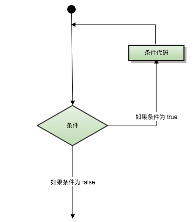
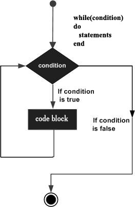
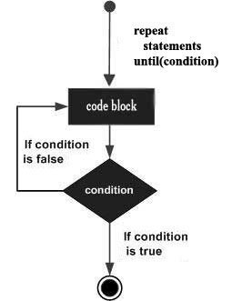

Lua 循环
很多情况下我们需要做一些有规律性的重复操作，因此在程序中就需要重复执行某些语句。
一组被重复执行的语句称之为循环体，能否继续重复，决定循环的终止条件。
循环结构是在一定条件下反复执行某段程序的流程结构，被反复执行的程序被称为循环体。
循环语句是由循环体及循环的终止条件两部分组成的。

一、循环方式
Lua 提供了以下几种循环处理方式：
| 循环类型 | 描述 |
|---|---|
while 循环 |
在条件为 true 时，让程序重复地执行某些语句。执行语句前会先检查条件是否为 true |
for 循环 |
重复执行指定语句，重复次数可在 for 语句中控制。 |
Lua repeat...until |
重复执行循环，直到 指定的条件为真时为止 |
| 循环嵌套 | 可以在循环内嵌套一个或多个循环语句（while、for、do..while） |
循环控制
循环控制语句用于控制程序的流程，以实现程序的各种结构方式。
| 控制语句 | 描述 |
|---|---|
break 语句 |
退出当前循环或语句，并开始脚本执行紧接着的语句。 |
流程图如下

另外：Lua 并没有提供类似 contrnue 的语句。
二、循环类型介绍
1、while 循环
Lua 编程语言中 while 循环语句在判断条件为 true 时会重复执行循环体语句。
语法
while(condition) do
statements
end
statements（循环体语句）可以是一条或多条语句，condition(条件) 可以是任意表达式，在 condition(条件) 为 true 时执行循环体语句。
流程图如下：

在以上流程图中我们可以看出在 condition(条件)为 false 时会跳过当前循环并开始脚本执行紧接着的语句。
实例 以下实例循环输出 a 的值：
a=10
while(a < 15) do
print("a 的值为:", a)
if(a==12) then
print("execute break" );
break
end
a = a+1
end
执行以上代码，输出结果如下：
a 的值为: 10
a 的值为: 11
a 的值为: 12
2、for 循环
Lua for 循环是一种重复控制结构，用于有效地编写需要执行特定次数的循环。
其中 for 语句有：数值循环、泛型循环 两种类型。
数值for循环
语法格式
for var=exp1, exp2, exp3 do
<执行体>
end
var 从 exp1 变化到 exp2，每次变化以 exp3 为步长递增 var，并执行一次"执行体"。exp3 是可选的，如果不指定，默认为1。
for i=1, 6 do
print(i) --> 依次打印：1到6
end
for i=10, 1, -1 do
print(i) --> 依次打印：10到1
end
三个表达式在循环开始前一次性求值，以后不再进行求值。比如下面的 f(x) 只会在循环开始前执行一次，其结果用在后面的循环中。
function f(x)
print("function")
return x*2
end
for i=1, f(3) do
print(i)
end
结果如下
function
1
2
3
4
5
6
可以看到 函数 f(x) 只在循环开始前执行一次。
泛型for循环
泛型for循环通过一个迭代器函数来遍历所有值，类似java中的 foreach 语句。语法格式如下。
--打印数组a的所有值
for i, v in ipairs(a) do
print(v)
end
i是数组索引值v是对应索引的数组元素值。ipairs是Lua提供的一个迭代器函数，用来迭代数组。
实例如下
days = {"Suanday", "Monday", "Tuesday", "Wednesday", "Thursday", "Friday", "Saturday"}
for i, v in ipairs(days) do
print(i, v)
end
以上实例输出结果为：
1 Suanday
2 Monday
3 Tuesday
4 Wednesday
5 Thursday
6 Friday
7 Saturday
3、repeat...until 循环
repeat...until 循环保证至少执行一次，循环在底部检查循环的条件。类似于java中的 do..while 循环。
语法如下
repeat
statement(s)
until( condition )
- statements (循环体语句)：可以是一条或多条语句
- condition (条件)：可以是任意表达式，条件为 true 时执行循环体语句，为 false 时会跳过当前循环。
循环流程图如下：

示例代码
a = 10
repeat
print("value of a:", a)
a = a + 1
until( a > 13 )
执行结果
value of a: 10
value of a: 11
value of a: 12
value of a: 13
4、循环嵌套
Lua 编程语言中允许循环中嵌入循环。以下实例演示了 Lua 循环嵌套的应用。
for 循环嵌套语法格式
for init, max/min value, increment do
for init, max/min value, increment do
statements
end
statements
end
while 循环嵌套语法格式:
while(condition) do
while(condition) do
statement(s)
end
statement(s)
end
repeat...until 循环嵌套语法格式:
repeat
statements
repeat
statements
until(condition)
until(condition)
除了以上同类型循环嵌套外，我们还可以使用不同的循环类型来嵌套，如 for 循环体中嵌套 while 循环。
j = 2
for i=2,10 do
for j=2,(i/j) , 2 do
if(not(i%j)) then
break
end
if(j > (i/j)) then
print("i 的值为：",i)
end
end
end
运行结果
i 的值为： 8
i 的值为： 9
i 的值为： 10